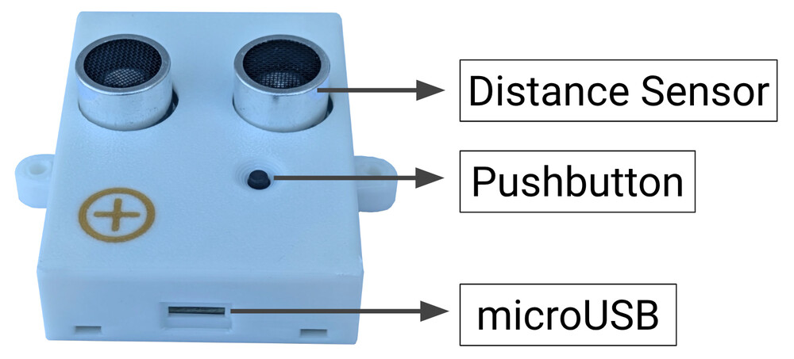
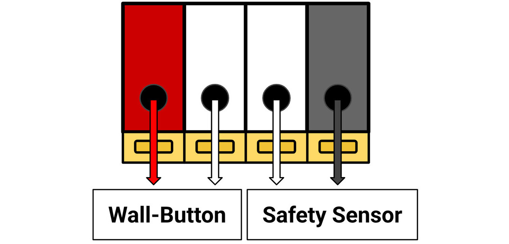
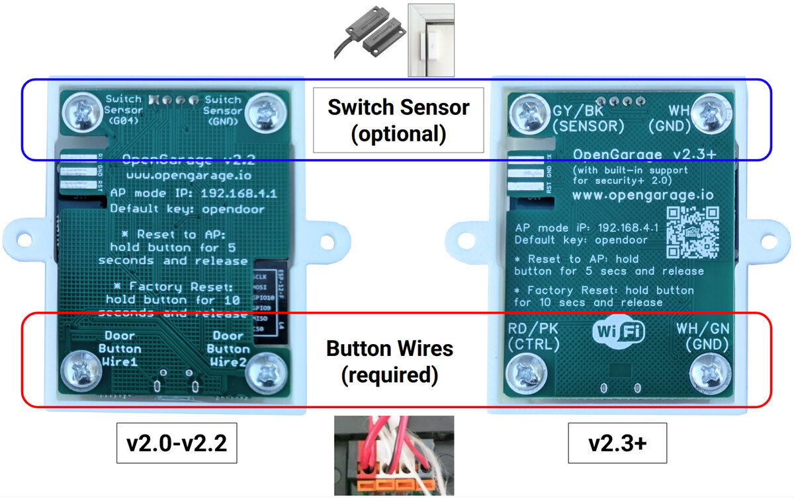
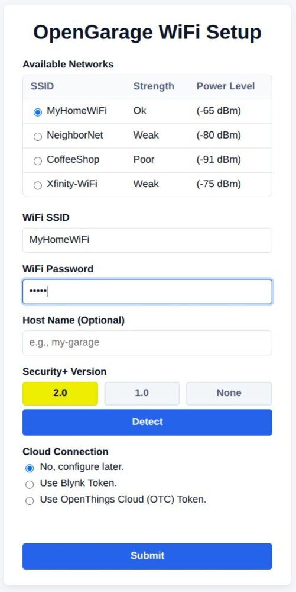
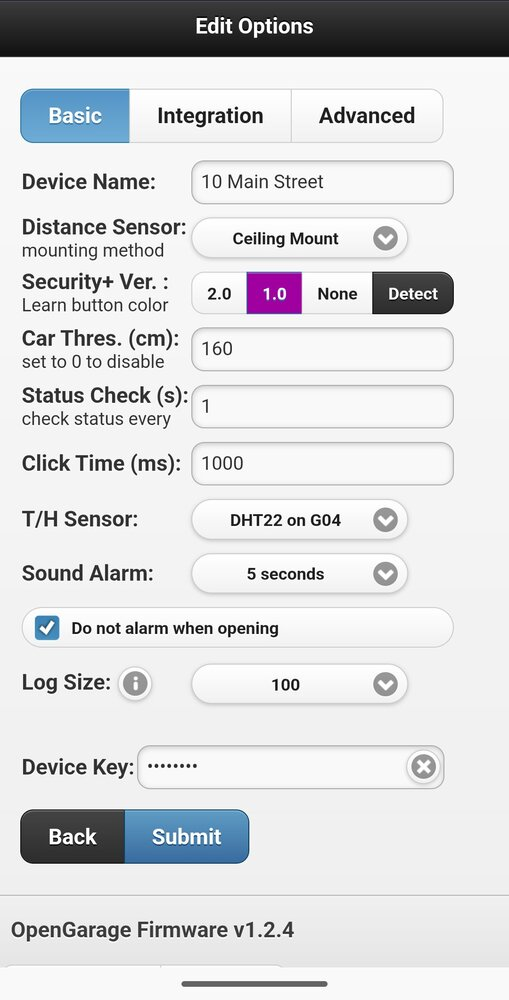
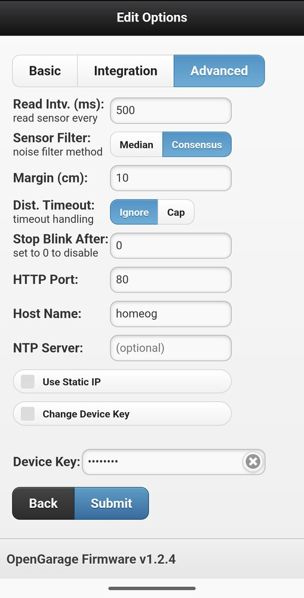

Firmware 1.2.4 User Manual [Oct 6, 2025]
OpenGarage is a fully open-source product. Hardware and software details are all published at the OpenGarage Github repository. For additional details, video tutorials, technical support, and user forum, visit https://opengarage.io.
What's New in Firmware 1.2.4?
This firmware introduces support for OpenGarage v2.3+, a new hardware version that can natively communicate with Security+ 2.0 and 1.0 openers. This direct communication enables a range of new features, including richer door status reporting and control over the opener's light and remote lock. Here is a detailed list:
- Auto-detection of Security+ 2.0/1.0.
- Reporting a complete list of door states: closed, open, stopped (partially open), closing, opening.
- Control opener's light and remote lock (enable/disable garage remotes).
- Obstruction sensor reporting.
- Wall-panel emulation for Security+ 1.0.
- Redesigned AP-mode WiFi setup page with a sleek new appearance.
- Built-in web UI now serves minified and compressed assets for quicker loads and reduced flash usage.
- Firmware update progress indicator.
- MQTT integration and Blynk UI updated to include the extended door states, light, and remote lock controls.
- Backward compatibility with older OpenGarage hardware that does not have native support for Security+.
Hardware Setup
Warning
OpenGarage is not waterproof. If installing outdoors, place it inside a waterproof enclosure.
OpenGarage has a built-in ultrasonic distance sensor for detecting door status and car presence, a pushbutton, and a microUSB connector for power.

Step 1: Locate Door-Button Terminals

On your garage opener's motor unit, locate the terminals that connect to the wall button (also called console or door control). OpenGarage communicates with the opener through these terminals. Most openers have four terminals:
- Two for the wall-button — typically colored Red (Signal) and White (Ground). These are the ones OpenGarage connects to.
- Two for the safety sensor — typically colored Gray (Signal) and White (Ground).
If you are unsure, or your terminals don't have these colors: simply identify which terminals are connected to your existing wall button, or refer to your opener’s user manual.
Step 2: Wiring

OpenGarage v2.x has four integrated screw terminals. Flip the device over to identify the terminals on the back:
- The bottom two connect to your opener's wall-button terminals. These are required.
- The top two are optional: they can be connected to a magnetic switch sensor, or your opener's safety sensor (for sensing obstruction status).
Use the two-wire cable from your OpenGarage package to connect the bottom two screws to your opener's wall-button terminals identified in Step 1 above:
- On OpenGarage v2.0—2.2, the terminals are labeled Door Button Wire1 and Door Button Wire2. They are non-polarized, so can be connected in either orientation.
- On OpenGarage v2.3+, they are labeled Red/Pink (CTRL) and White/Green (GND) respectively. These are polarized:
- CTRL must go to your opener's Red (Signal) terminal
- GND must go to your opener's White (Ground) terminal.
- The included cable uses Pink and Green for internal wire colors. Use Pink as Red, and Green as White. If using your own cable, they are typically colored Red and White.
Warning
v2.3+ is designed primarily for LiftMaster, Chamberlain, and Craftsman brands, which operate their wall-buttons at 12V DC. If you plan to use it with other brands, make sure your wall-button terminals output DC only, and that the voltage is below 20 V. Applying AC voltage or DC voltage above 20 V can permanently damage the v2.3+ circuit.
To connect the wires:

- Loosen the screws on the bottom two terminals.
- Strip the wire ends to an appropriate length. Then insert the stripped copper wire through the enclosure hole.
- Using tweezers, a small screwdriver, or needle-nose pliers, wrap the wire around the screw at least one full turn.
- Tighten the screw securely.
- Repeat for the second terminal.
- Trim any excess wire to ensure it doesn't touch nearby solder joints.
- Finally, strip the other ends of the cable and insert them into your opener's wall-button terminals, following the color guide.
Step 3: Mounting
The best location to mount OpenGarage is on the ceiling, with the distance sensor facing down. The ideal position depends on how the device senses the door status:
- For OpenGarage v2.0—2.2, or v2.3+ with Security+ set to
None: The device uses the distance sensor to detect the door's open status. Therefore, position the device so it has an unobstructed view of your garage door when it's open, and the top of your car when the door is closed.- NOTE: When the door is open, the car status is unavailable, as the door blocks the sensor's view of the car.

- For OpenGarage v2.3+ with Security+ set to
2.0or1.0: The device obtains the door status directly via the Security+ protocol. The distance sensor is used solely for detecting car presence. Therefore, position the device such that it has an unobstructed view of your car at all times, regardless of the door's position.- NOTE: Car status remains available whether the door is open or closed.

Warning
Areas to Avoid: Do NOT mount the device directly above or too close to the metal garage door rail or chain. These objects can interfere with distance sensor readings.
Once you've chosen a good location, use screws or strong double-sided tape to mount the device securely.
Software Setup
This section walks you through powering on your OpenGarage, connecting it to your WiFi network, and accessing its web interface for the first time.
Step 1: Power-Up and AP Mode
-
Plug a microUSB cable into the device and connect it to a USB power adapter.
-
The first time it powers on (or after a WiFi/factory reset), the device creates an open WiFi Access Point (AP) named:
OG_followed by the last 6 digits of its MAC address. For example:OG_67FG8A. Use your phone, tablet, or computer to find this network and connect to it.
Step 2: WiFi Configuration

- After connecting to the
OG_network, most smart devices will automatically prompt you to "Sign In".- If you don't see this prompt or "Sign In" page, manually open a web browser and go to
192.168.4.1.
- If you don't see this prompt or "Sign In" page, manually open a web browser and go to
- Follow the on-screen instructions (see the attached screenshot below):
- Either select or enter your WiFi router's name (SSID) and type its password.
- Host Name (Optional) : Enter a custom hostname (e.g.
myog). This makes it easy to access the device later using a domain name likehttp://myog.local. - Security+ Detection (Optional, OpenGarage v2.3+ only) : If you have wired your v2.3+ it to your garage opener, click Detect to automatically detect the Security+ protocol version. This feature is hidden on OpenGarage v2.2 and earlier as they do not support Security+.
- Cloud Token (Optional) : If you already have a Blynk or OTC token (see the Cloud Connection section), enter it here. Otherwise, select
Noand you can configure it later.
- Click Submit. Upon a successful connection, you will hear a short tune from the buzzer. Your WiFi credentials are saved and the device reboots into WiFi Client Mode, where it automatically obtains a Device IP address from your router. This device IP is typically displayed at the bottom of the screen upon the completion of this step.
Step 3: Access the Device Locally on Your Network
Now that OpenGarage is connected to your home network, you can access it locally using its device IP.
- Open a browser on a smart device or computer that is connected to the same home WiFi network as OpenGarage, and enter the device IP.
-
Device Key: To perform certain actions like triggering the door or changing settings, you need to enter a Device Key.
Info
The default Device Key is: opendoor
Finding the Device IP: If you don't know your OpenGarage's device IP, there are several ways to find it:
- Check your router's Client List: Log in to your WiFi router's administration page and look for a list of connected devices. The OpenGarage should appear there with its assigned IP address.
- mDNS: If you entered a custom Host Name during WiFi configuration (e.g.
myog), you can access it using the mDNS namehttp://myog.local/(i.e. the host name followed by.local/). If you left the host name empty, it uses the default host name, which isOG_followed by the last 6 digits of its MAC address (same as AP-mode SSID). In the example above, it will behttp://OG_67FG8A.local/. - Audible IP: Press and hold the onboard pushbutton for 2 to 4 seconds, then release. The device will beep out its IP address using tones (see Button Actions below).
Step 4: Button Actions
The pushbutton on OpenGarage has several useful functions depending on how long you press it:
- Trigger Relay: A short click (less than 2 sec) → triggers the onboard relay and consequently garage door action. This is similar to a typical garage door wall button.
- Report IP: Hold 2-4 sec and release → the device IP is reported as sequences of rising notes, pauses, and high-pitch tones for dots. For example:
192.168.1.10is beeped out as aC4(the leading1), followed by a pause; then sequenceC4, C#4, D4...continuously untilG#5, indicating digit9, followed by a pause; thenC4, C#4and pause, indicating2; then a high-pitch tone, indicating a dot; and so on. Count the number of notes in each sequence to determine the digit. - Reset to AP Mode: Hold 5-9 sec until the LED toggles state (from off to on), then release → resets the device to WiFi AP Mode. This allows you to reconfigure WiFi without losing settings and log data.
- Factory Reset: Hold 10+ sec until the LED turns on and then off → resets the device back to factory default. This erases all settings and data, restoring the device to its original state.
Step 5: Cloud Connection
To control and monitor your OpenGarage remotely from anywhere, you'll need to set up a cloud connection. OpenGarage supports two cloud services:
- OTC (OpenThings Cloud): Allows full remote access to the built-in web UI. All features are supported except firmware upgrade.
- Blynk: Allows remote status checks and door control, but does not allow settings, logs, or firmware upgrade.
Info
For detailed instructions on setting up and using cloud services, refer to the Cloud Connection Support Article.
Step 6: Browser, Mobile App, and Home Assistant Integration
- Browser Access
- OpenGarage provides a built-in web UI accessible directly from any browser using the device's local IP or hostname.
- Remote access via browser is also supported through the OTC cloud connection using the OTC base url.
- Web App
- A lightweight OpenGarage Web App is available for conveniently managing multiple OpenGarage devices.
- It supports both local access (via device IP) and remote access (via Blynk or OTC), and runs entirely in your browser — no installation required.
- Native App
- The OpenGarage Mobile App is available for installation in both the iOS App Store and Google Play. It provides a native app interface for door control, status, and multiple device management.
- The firmware still works with the Blynk legacy app (officially discontinued but may still be available on third-party websites). Instructions can be found here.
- Home Assistant Integration
- OpenGarage has an official Home Assistant integration that adds the device as a cover entity. It allows door control, status monitoring, and automation within Home Assistant.
- API and MQTT
- OpenGarage exposes a simple, well-documented HTTP API as well as MQTT support. You can use these to write custom scripts, integrate with third-party apps, or connect through any MQTT client.
Built-in Web Interface
Homepage

The homepage displays a real-time overview of your device's status including:
- Door status
- Vehicle detection status
- Distance sensor value
- Switch sensor state (if enabled)
- Obstruction sensor status (Security+ 2.0/1.0 only)
- Panel Emulation mode (Security+ 1.0 only)
- WiFi Signal strength
- Cloud connection status
- Temperature/Humidity sensor readings (if enabled)
You can also perform several key operations including:
- Open/Close/Toggle door
- Reboot Device
- Reset WiFi
- Clear Log.
- Toggle Light and Remote Lock (Security+ 2.0/1.0 only)
All of these actions require the Device Key (default: opendoor), except when accessed remotely via OTC token, where the key is not required. For convenience, the key is cached in your browser and can be cleared by clicking the ✖ icon next to it.
The homepage also provides navigation links to Edit Options, Show Log, Firmware Update, and the User Manual.
Edit Options
Editing any option requires the Device Key (except when accessed remotely via OTC token). Some options take effect only after a reboot — these are marked [Effective after reboot]. The options are divided into three tabs:
1. Basic Tab

- Device Name: A custom name shown on the homepage.
- Distance Sensor: How the device is mounted:
- Ceiling Mount (default): The most common use, where the device is mounted on the ceiling with the ultrasonic distance sensor facing down.
- Side Mount: For roll-up doors or when ceiling mount is not feasible: mount the device on the side of the door facing outward.
-
Security+ Version: Available only on OpenGarage v2.3+ and applies to LiftMaster, Chamberlain, and Craftsman brands. You can typically identify the version by the color of the Learn button or antenna wire on the motor unit:
- 2.0: Yellow
- 1.0: Purple, Orange, or Red
- None: Green, or any brand not listed above
-
Detect: If you're unsure of your version, click Detect to automatically probe and select the correct type.
Danger
The detection can take up to 15 seconds, and the door may activate or move during this time. Ensure the door's path is clear before proceeding.
-
Door Threshold: Distance (in
cm) used to determine if the door is open.- Set it larger than the distance from the ceiling to the door when fully open, but smaller than the ceiling-to-car distance.
- Example: if the distance from ceiling to the fully-open door is 30 cm, set the threshold to
50 cmto provide a reliable margin. - This option is only available if Security+ Version is None. For Security+ 2.0/1.0, the door status is obtained from the Security+ protocol and not by the distance sensor.
- Car Threshold: Distance (in
cm) used to determine if a car is detected.- Set it larger than the ceiling-to-car distance, but smaller than ceiling-to-ground distance.
- The diagram below illustrates how to set the Door and Car thresholds.

- Status Check Interval: How often (in
seconds) the device checks all sensors. Default:1. - Click Time: Duration (in
ms) the relay is held when triggered. Default:1000 ms. -
Switch Sensor: (only available if Security+ Version is None) Configure an optional magnetic sensor (connected between pin
G04andGND) for door detection. Options:- Normally Closed: most common type; switch is closed/shorted when door is closed
- Normally Open: switch is open when door is closed
-
Sensor Logic: (only available if Security+ Version is None) If a switch sensor is enabled, you can define how the distance and switch sensors together determine the door status:
- Distance Sensor Only
- Switch Sensor Only
- Distance
ANDSwitch — door considered open only if both sensors report open - Distance
ORSwitch — door considered open if either reports open
-
T/H Sensor
[Effective after reboot]: Select the type of optional temperature/humidity sensor (requires soldering). Supported sensors:- DHT11/DHT22 (data pin on
G05) - DS18B20 (data pin on
G05, requires10 kΩpull-up resistor) - The sensor must be powered by
VCC(3.3 V) andGND
- DHT11/DHT22 (data pin on
-
Sound Alarm: Set the duration for the audible alarm before each door movement.
- Includes an option to disable the alarm specifically for door opening.
- Log Size: Number of log records to retain.
- After changing, go to the homepage and click Clear Log for it to take effect.
2. Integration Tab

-
Enable Cloud Connection: Select Blynk or OTC for cloud service, and enter the Cloud Token. The default Cloud Server / Port are:
- Blynk:
blynk.openthings.io, port8080 - OTC:
ws.cloud.openthings.io, port80
- Blynk:
-
Enable MQTT: Enable MQTT communication by provide the MQTT server URL, port, credentials (optional), and a custom MQTT topic.
- If topic is left blank, the device name is used.
-
Enable Email Notifications: Set up email notifications by providing an SMTP server, credentials, and recipient address.
-
For detailed instructions, refer to the Setting Up Email Notifications Support Article.
Info
When using MQTT or Email Notifications, please ensure all fields are correct. Empty or incorrect values may cause the device to become unresponsive.
-
-
IFTTT Key: Webhook service key for IFTTT integration.
- Create an IFTTT account, search "Webhook" service and create a key, then copy your key here. You can then create applets triggered by the
opengarageevent name, with SMS, email, or push notification as the action. The notification message is passed via parametervalue1.
- Create an IFTTT account, search "Webhook" service and create a key, then copy your key here. You can then create applets triggered by the
-
Choose Notification Events: Select which events generate notifications. Applies to all of Blynk, Email, IFTTT, and MQTT.
-
Automation: Set up rules to automatically notify you or close the door if it has been left open beyond a certain amount of time, or past a specific UTC time.
- Time is in UTC, as the controller does not know your local timezone. Example: to close at 6 PM local (UTC-4), set 22 (6 PM + 4 h = 22 UTC).
- A minimum 5-second sound alarm is enforced before auto-close.
3. Advanced Tab

-
Read Interval
[effective after reboot]: Time (inms) between ultrasonic distance sensor readings. Default:500 ms.- Increasing this value can help reduce noise.
-
Sensor Filter method:
- Median: Use median of the last 7 readings.
- Consensus: Average the last 7 readings if their range
(max–min) ≤ margin; otherwise ignores until stable. Margin defines the range tolerance (default:10 cm). - If Consensus fails often, increase margin (e.g.
20 cm) or switch to Median filter.
-
Distance Timeout: How to handle ultrasonic sensor timeout:
- Ignore (default): Ignore invalid readings to reduce noise.
- Cap at the maximum which is
450 cm.
-
HTTP Port
[effective after reboot]: Custom web server port (default:80). -
Hostname: Custom local hostname.
- If left blank, defaults to the WiFi AP name (refer to WiFi configuration).
- Allows access via
http://<hostname>.local/instead of numeric IP.
-
NTP Server: Custom time server; defaults to
pool.ntp.orgif blank. -
Use Static IP
[effective after reboot]: Manually assign a fixed IP instead of DHCP.- Requires manual entry of Device IP, Gateway IP, Subnet, and DNS1.
-
Device Key: Change the Device Key from the default
opendoorto your own password.
Firmware Update
Follow the firmware update instructions.